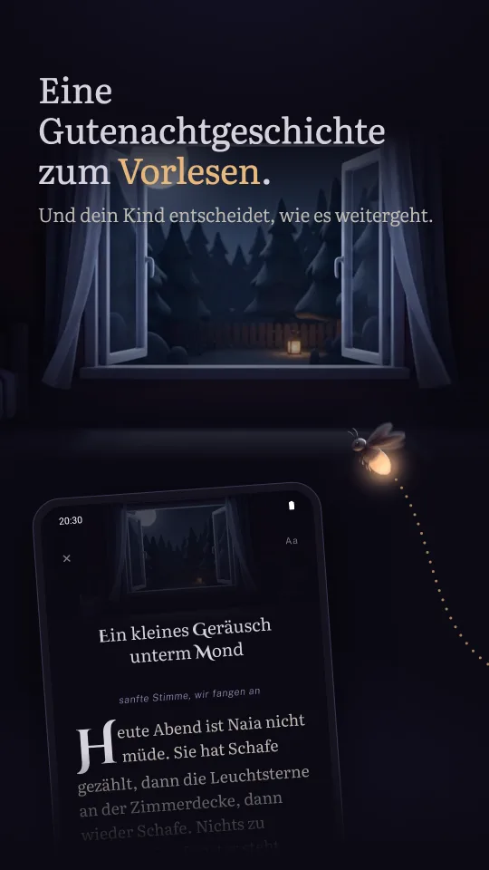
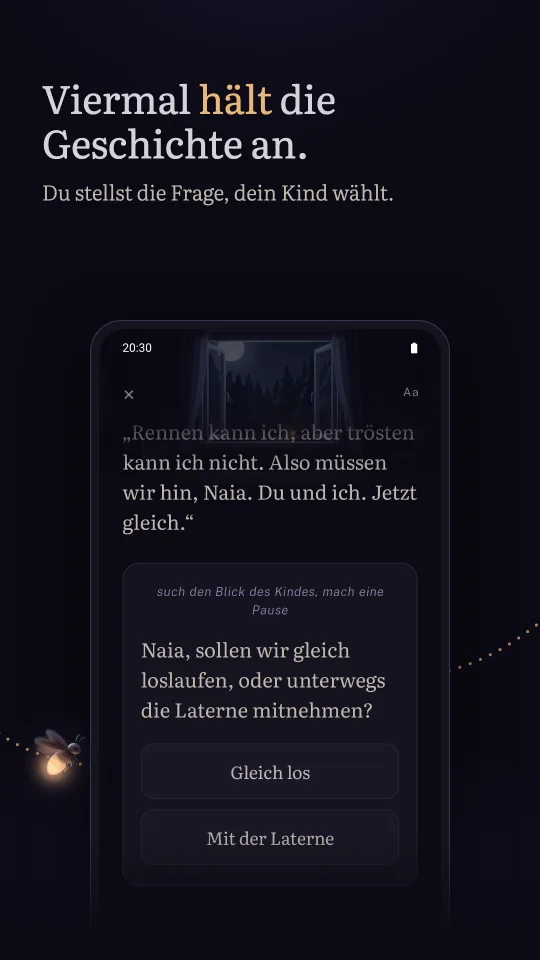
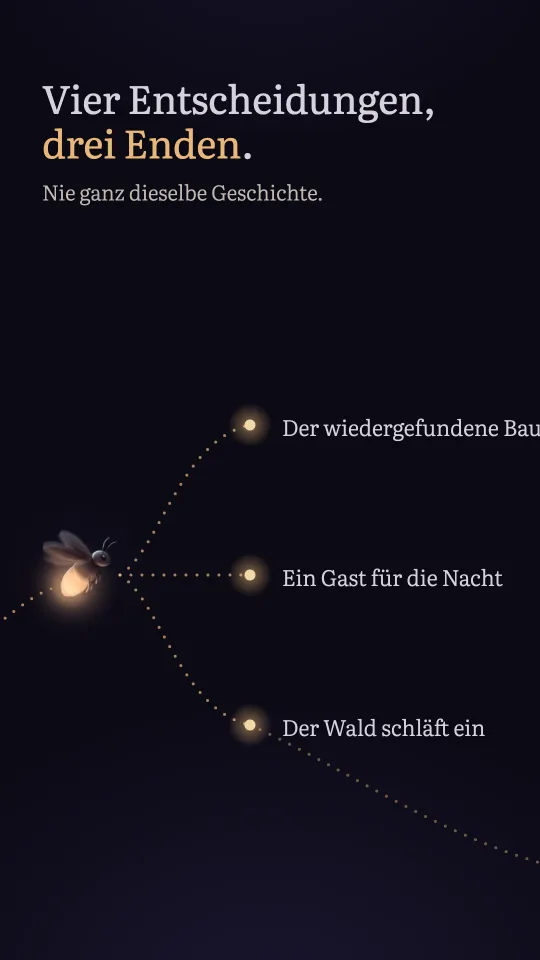
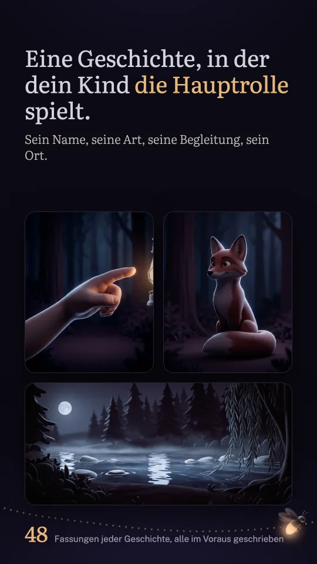
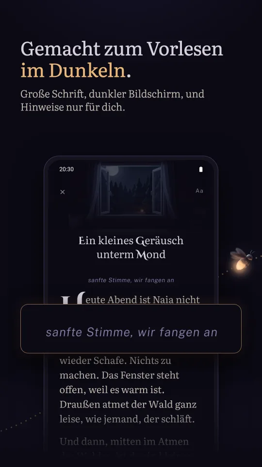
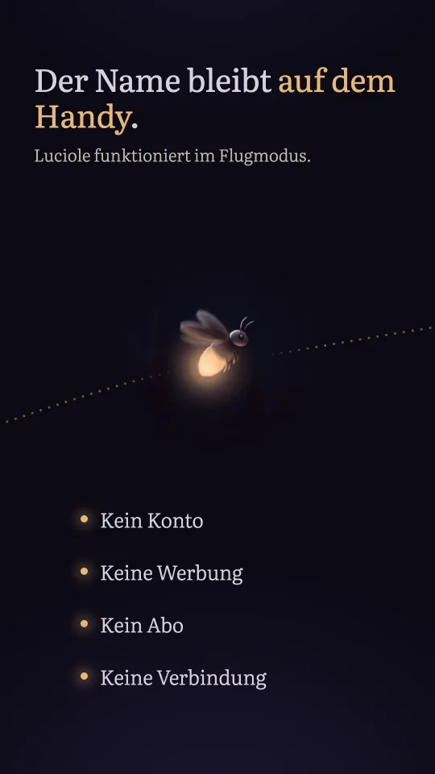
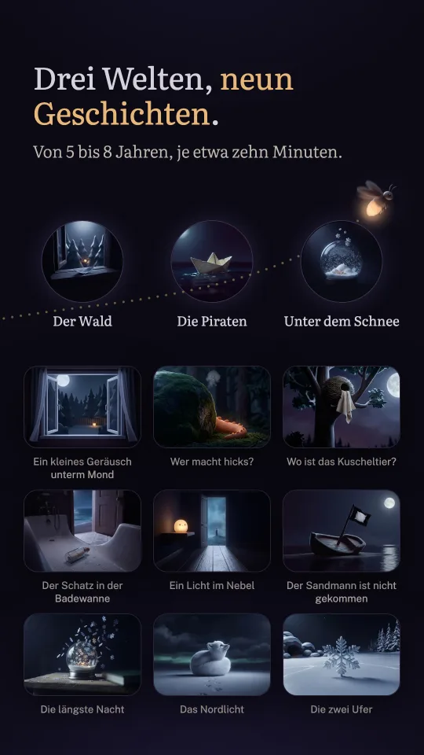

Eine Geschichte zum Vorlesen, und dein Kind entscheidet
-
Du liest vor, dein Kind entscheidet
Du hältst das Handy und liest vor. Viermal hält die Geschichte bei einer Frage an, die du deinem Kind stellst. Dein Kind antwortet, du tippst auf die Wahl, und die Geschichte nimmt eine neue Wendung.
-
Drei Enden
Die Entscheidungen verändern wirklich, was danach kommt. Von einem Abend zum nächsten ist es nie ganz dieselbe Geschichte.
-
Der Name, die Hauptrolle, die Begleitung, der Ort
Mutig, neugierig, verschmitzt oder ruhig; eine von vier Begleitungen, vom Fuchs bis zum Papagei oder Pinguin; einer von drei Orten, vom Fluss bis zum Wrack oder zum Packeis. Achtundvierzig Fassungen jeder Geschichte, geschrieben, nicht von einer Maschine zusammengesetzt.
-
Gemacht für das Dunkel
Dunkler Bildschirm, cremefarbene Schrift, eine große Schrift, die du mit einer Geste anpasst. Die Geschichte läuft in einem Stück durch, ohne Umblättern, und jede Frage erscheint in einer Karte, genau wenn es Zeit für sie ist. Hinweise für dich stehen kursiv und werden nicht vorgelesen.
-
Drei Welten, neun Geschichten
Der Wald ist dabei, mit seinen drei Geschichten; die Piraten und der Schnee, je drei Geschichten, werden einmal und für immer über Google Play freigeschaltet. Für Kinder von fünf bis acht Jahren, je acht bis zehn Minuten Vorlesen.
So funktioniert es
Der Name deines Kindes, dann drei Bilder zum Auswählen: wie dein Kind heute Abend ist, wer mitkommt, wo alles spielt.
Du liest vor, in einem Stück, ohne Umblättern.
Bei jeder Frage entscheidet dein Kind. Du tippst auf die Wahl und liest weiter.
Bilder







Kein Konto, keine Werbung
Luciole sammelt, sendet und teilt keine personenbezogenen Daten. Kein Konto, keine Verbindung, keine Werbung, kein Abo: Welten werden einmal über Google Play gekauft, und die App funktioniert im Flugmodus.
Auf dem Handy speichert sie den Namen deines Kindes und das gewählte Pronomen, die Entscheidungen vor jedem Lesen, die Schriftgröße und den Verlauf der gelesenen Geschichten. Wer die App deinstalliert, löscht alles.
Fragen
Kann mein Kind die App allein benutzen?
Dafür ist sie nicht gemacht. Luciole ist ein Ritual zu zweit: Der Erwachsene hält das Handy und liest vor, das Kind hört zu und entscheidet. Für das Kind gibt es nichts zu lesen, und auf dem Bildschirm bewegt sich nichts.
Für welches Alter?
Von fünf bis acht. Der Wortschatz ist für ein sechsjähriges Kind gedacht, das zuhört, ohne dass es lesen können muss.
Wie viele Geschichten?
Neun, in drei Welten. Der Wald ist dabei: „Ein kleines Geräusch unterm Mond“, „Wer macht hicks?“ und „Wo ist das Kuscheltier?“. Die Piraten und der Schnee werden je mit einem einmaligen Kauf freigeschaltet, ohne Abo. Jede Geschichte gibt es in achtundvierzig Fassungen, je nach Hauptrolle, Begleitung und Ort, mit drei Enden, auf Deutsch, Englisch, Französisch oder Spanisch. Nichts herunterzuladen: Alles ist auf dem Handy.
Braucht die App eine Verbindung?
Zum Lesen nie: Die App funktioniert im Flugmodus. Nur der Kauf einer Welt läuft über Google Play und braucht dann eine Verbindung.
Können wir eine Geschichte dort fortsetzen, wo wir aufgehört haben?
Ja. Wenn dein Kind mittendrin einschläft, bietet der Startbildschirm an, dort weiterzulesen, wo ihr aufgehört habt.